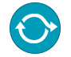

| Артефакт: Процесс разработки |
|  |
|
| Процесс разработки предоставляет руководство и поддержку для участников проекта. Метафора "информация на кончиках пальцев" хорошо отражает назначение этого рабочего продукта. |
| Основное описание | Каждый процесс имеет n-уровневую упорядоченную структуру. Основные элементы наполнения метода представляют собой пошаговые инструкции по решению конкретных задач при разработке продукта независимо от расположения этих задач в жизненном цикле разработки. Процессы представляют собой упорядоченные последовательности элементов методов, настраиваемые для конкретных типов проектов. Таким образом, процесс представляет собой набор частично упорядоченных описаний работы, задача которого заключается в достижении очередной цели при разработке программного обеспечения, например, выпустить очередную версию программного продукта. Основное внимание в процессах уделяется жизненному циклу и упорядочению работы. Существуют разные типы процессов: Процесс поставки и Шаблон возможностей. Процесс поставки Процесс поставки - это особый процесс, в котором описан полный и целостный подход к выполнению проектов разработки определенного типа. Процесс поставки охватывает весь жизненный цикл разработки, от начала и до конца. Процесс поставки применяется в качестве шаблона для планирования и выполнения проекта. В нем содержится полное описание модели жизненного цикла с предопределенными этапами, итерациями и деятельностями в форме последовательно упорядоченной структуры наполнения методов. Он определяется на основе опыта предыдущих проектов или договоров и/или лучших методов подхода к разработке или поставке. Этот процесс определяет, что и каким образом должно быть создано, а также требования к персоналу, в форме целостных упорядоченных структур Работы, Рабочего продукта и Коллектива. Например, инженер процессов может создать несколько альтернативных процессов поставки для проектов разработки программного обеспечения, отличающихся масштабом, объемом необходимых ресурсов, типом разрабатываемых продуктов, методами и технологиями разработками, а также другими характеристиками. Хотя процесс поставки должен охватывать весь проект, он должен предоставлять свободу принятия решений по вопросам, находящимся в сильной зависимости от конкретного проекта. Например, в структуре процесса хранится информация о том, какие элементы структуры встречаются несколько раз или выполняются многократно, но при этом не указывается точное количество повторений (итераций) этих элементов. Подобные решения должен принять руководитель проекта при планировании конкретного проекта, этапа или итерации. Шаблон возможностей Шаблон возможностей описывает многоразовые кластеры операций в общих областях процессов. Шаблоны возможностей применяются разработчиками процессов для обмена информацией о процессах в определенной области, например дисциплине. Кроме того, они используются в качестве компонентов, из которых формируются процессы поставки или более крупные шаблоны возможностей. Такой подход позволяет оптимизировать многократное использование базовых кластеров операций. Примерами шаблонов возможностей могут служить "управление требованиями на основе вариантов", "анализ вариантов" и "тестирование блока". Обычно, хотя не обязательно, шаблоны возможностей затрагивают одну Дисциплину и представляют собой структуры, состоящие из многоразовых сложных операций и их связей с ролями, выполняющими задачи этих операций, и используемыми и создаваемыми продуктами работы. Как правило, шаблоны возможностей не привязаны к конкретным итерациям и этапам жизненного цикла и не должны зависеть от них. Иными словами, шаблоны должны быть разработаны таким образом, чтобы они были применимы в любой точке процесса поставки. Это позволяет использовать соответствующие комплексы операций на любых этапах процесса поставки. Рекомендуется разрабатывать Шаблон возможностей для создания одного или нескольких базовых конечных продуктов. В типичной конфигурации каждая деятельность в шаблоне возможностей создает один конечный продукт, и выводом последнего дескриптора задачи в деятельности является только этот конечный продукт. Это позволяет инженеру процесса выбирать шаблоны или просто деятельности, принимая решение о том, какие конечные продукты требуются. Он также допускает простой подход к интеграции: деятельность из шаблона возможности связывается с этапом или итерацией, которые требуются для создания конечного продукта деятельности. |
|---|
| Вы можете принять решение не фиксировать весь процесс в процессе разработки. В некоторых случаях большая степень
ответственности и принятия решений о процессе и о рабочих продуктах в частности отводится участникам проекта разработки
программного обеспечения. Например, если имеется опытный руководитель проекта, то можно доверить ему принимать решение о
том, какие планы и каким образом следует создавать. Точно так же многие руководители проектов не заботятся о том, каким
образом каждый член коллектива разрабатывает его часть системы, если они вовремя обеспечивают требуемую функциональность
при приемлемом уровне качества.
Одна из причин, по которой вообще следует иметь описание процесса - чтобы несколько сотрудников могли пользоваться общей информацией. Если этого не требуется, то стоимость обслуживания описания процесса может оказаться слишком высокой. Поэтому может быть принято решение не создавать или не обслуживать описание процесса для одной или нескольких дисциплин. Это не означает, что в эту конкретную дисциплину не вкладывается никаких усилий, либо что она не является важной. Например, в коллективе может работать отличный руководитель тестирования. Предоставьте ему всю необходимую поддержку, но дайте возможность самому решить, как именно работать и какие рабочие продукты создавать. |
| Концепции |
|---|
© Copyright IBM Corp. 1987, 2006. Все права защищены.. |